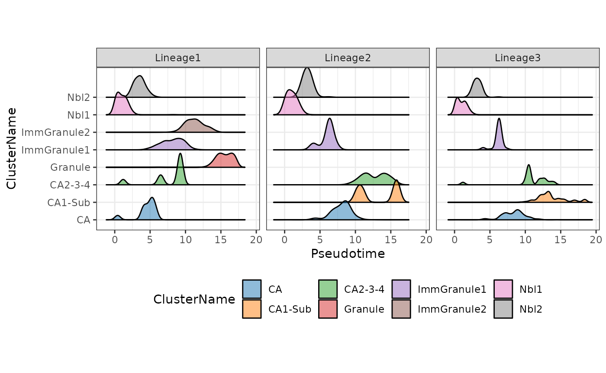
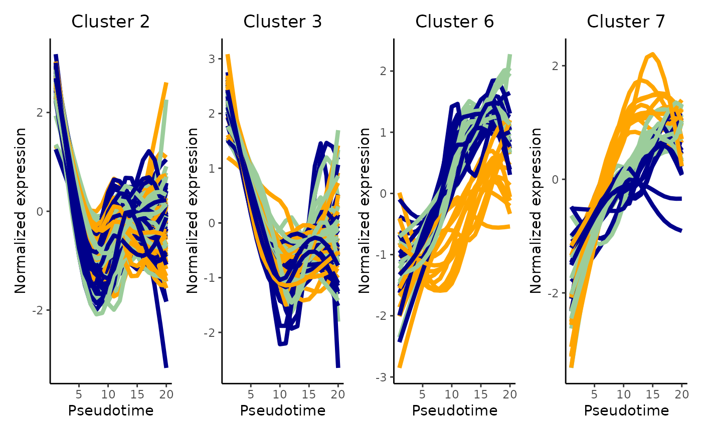

Advanced Phenotyping in Single Cell Data Analysis
Yingxin Lin1 Hani Jieun Kim2 Carissa Chen3
Source:vignettes/advanced_phenotyping.Rmd
advanced_phenotyping.RmdOverview
Description
Cellular phenotyping broadly refers to all procedures that aim to identify the identity and/or state of cells, as well as the relationship between cells. This workshop, “Advanced Cellular Phenotyping”, is the third workshop in the “Single cell data integrative analysis” workshop series. Here, we discusses challenges and analytical focus associated with cellular phenotyping. The overall learning goals of the workshop is to understand the two common approaches to phenotype the cell: trajectory analysis and cell-cell interaction. We will also discuss the general analytical strategies associated with phenotyping single cells and future perspectives.
Preparation and assumed knowledge
- Knowledge of R syntax
- Basic knowledge in single cell data analysis
- Familiarity with the SingleCellExperiment class
- Familiarity with our previous workshop vignette on Introduction to Single Cell RNA-seq Analysis
- Relevant background reading for the workshop can be found in the links above.
Learning objectives
- describe various strategies for cellular phenotyping
- identify different workflows to build trajectory including calculate pseudo-times
- generate appropriate graphics to visualise the trajectories and expression of genes
- understand the different trajectory characterisation approaches including differentially expressed genes across trajectories,
- evaluate the single cell data to identify genes that distinguish trajectories and ligand-receptor interactions that distinguish cell types
- [optional] identify cell-cell interactions in a single cell data and understand how cell-cell communication can be used to distinguish cell types
1. Introduction
Many biological processes manifest as a continuum of dynamic changes and diverse cellular states. One of the major goals of single cell data analysis is to identify and characterize these cell types and states that are induced from external stimulation (such as environmental insults or perturbations), the spatial context, the point along the differentiation system in which a cell lies and more. Collectively, these biological, genetic and environmental factors contribute towards the diversity of the phenotypes we see among cells.
We define the process of phenotyping as any procedure that attempts to further characterize the identity and/or state of cells and the relationship between cells and is distinct from procedures relating to the pre-processing or clustering of the data. One of the most common and basic phenotyping procedure is cell type identification, which is a highly researched topic in single cell data analysis. We can further explore various characteristics of the cells by
- investigating where a cell lies along a trajectory, if the data demonstrates a pseudo-temporally ordered state;
- determining if there are multiple branches in the trajectory (which may associate with different cell type lineages);
- if the previous is true, distinguishing if certain gene expression programs are associated with a certain trajectory through differential expression analysis or gene set enrichment studies; and lastly;
- investigating if a certain signalling patterns can be observe between cell types. Collectively, these efforts contribute towards phenotyping the data and obtaining a more descriptive characterization of the data at hand.
Thus, the question becomes how do we identify the diverse phenotypes? Whilst single cell data enables us to interrogate the heterogeneity among the phenotypes and tease out different and distinct states, a cell’s phenotype is the manifestation of a collective and integrated output of a set of molecules or networks that span across multiple modalities (transcriptome, genome, epigenome, and proteome etc). In this workshop, we begin to investigate this using single-cell transcriptomes, acknowledging at the same time that a single modality alone may not be sufficient to accurately pinpoint all the phenotypes present in the data.
In this workshop, we will demonstrate two different approaches to phenotyping, trajectory analysis and cell-cell communication, using a mouse scRNA-seq data profiling the hippocampus dataset from La Manno et al. (2018).
2. Loading libraries and the data
2.2 Loading the preprocessed data
We will use the mouse hippocampus scRNA-seq dataset from La Manno et al. (2018). We provide the processed version in this workshop, which is subsampled (12,935 cells) from the original data (18,213 cells). The sampled data contains cells from two post-natal time points (P0 and P5) and a total of 8 cell types. The original data can be access from GEO with the accession number GSE104323.
# code to load data
sce <- readRDS("~/data/sce_DentateGyrus_hippocampus.rds")
sce <- scater::logNormCounts(sce)2.3 Visualising the data
We will visualise the data using four different dimensionality reduction approaches and color the individual data points (denoting single cells) by their cell type labels. Without much knowledge of the biological system, can you guess whether the data contains discrete or continuous cell types just by examining these plots?
sce <- scater::runPCA(sce, scale = TRUE)
sce <- scater::runUMAP(sce, dimred = "PCA")
sce <- scater::runTSNE(sce, dimred = "PCA")
sce <- scater::runDiffusionMap(sce, dimred = "PCA")
p1 <- plotPCA(sce, colour_by = "ClusterName") + ggtitle("PCA")
p2 <- plotUMAP(sce, colour_by = "ClusterName") + ggtitle("UMAP")
p3 <- plotTSNE(sce, colour_by = "ClusterName") + ggtitle("TSNE")
p4 <- plotDiffusionMap(sce, colour_by = "ClusterName") + ggtitle("Diffusion Map")
ggarrange(p1, p2, p3, p4, nrow = 2, ncol = 2, common.legend = TRUE)
Interpretation:
The visualisations in Step 2.3 suggests the presence of a clear trajectory. Starting from the progenitor cells (neuroblasts; Nbl1 and Nbl2), there is bifurcation of the trajectory into the two major lineages: the dentate gyrus granule neurons (“granule”) and pyramidal neurons (“CA”).
3. Trajectory inference: How can I infer the trajectory for my data?
This section contains two parts. The first part focuses on the four key steps of building a trajectory and the second part focuses on quality assessment of the build trajectory.
3.1 Four key steps in building a trajectory
Step 1: Feature selection
One of the first step in building a trajectoryis to perform feature selection. Given the high dimensional nature of high throughput single cell data, oftentimes it is advantageous to select for genes that provide biologically relevant information and remove those that add noise to the data. There are many ways to perform feature selection in single cell data, reviewed here.
In this workshop, we demonstrate feature selection using differential stability from Cepo to choose the top 100 cell identity genes for each cell type.
cepo = Cepo::Cepo(logcounts(sce), sce$ClusterName, exprsPct = 0.05)
cepoGenes = unique(unlist(Cepo::topGenes(cepo, n = 100)))Step 2: Dimension reduction
The code below demonstrate using Cepo selected genes to perform PCA.
sce = scater::runPCA(sce, scale = TRUE, subset_row = cepoGenes)
p1 = plotPCA(sce, colour_by = "ClusterName") + ggtitle("643 Cepo genes") Similar to Step 2.3, there are different dimensionality reduction approaches and we illustrate another three additional ways to achieve the same purposes.
sce = scater::runUMAP(sce, dimred = "PCA")
sce = scater::runTSNE(sce, dimred = "PCA")
sce = scater::runDiffusionMap(sce, dimred = "PCA")
p2 = plotUMAP(sce, colour_by = "ClusterName") + ggtitle("643 Cepo genes")
p3 = plotTSNE(sce, colour_by = "ClusterName") + ggtitle("643 Cepo genes")
p4 = plotDiffusionMap(sce, colour_by = "ClusterName") + ggtitle("643 Cepo genes")
ggarrange(p1, p2, p3, p4, nrow = 2, ncol = 2, common.legend = TRUE)Interpretation:
Running the dimensionality reduction with the data subsetted for the differentially stable genes reveals (using a quick visual interpretation) a trajectory in the PCA space that is more consistent with those observed in UMAP, TSNE, and DM.
Step 3/4: Creating a lineage structure and psuedo time inference
Building the trajectory is to infer and construct the trajectory and steps 3 and 4 are often combined in one function in many methods. Development of trajectory inference methods is actively evolving, and the effectiveness of current trajectory inference tools for transcriptomics data has been extensively reviewed in this benchmarking paper.
In this workshop, we will run slingshot on UMAP reduced dimension space as an example, for which more details of the implementation can be found here. The basic input of slingshot is
- the expression matrix (as an SCE object),
- cell type labels, and
- the coordinates for the reduced dimensions.
Details: Slingshot implements a two-stage procedure whereby in the first step it infers the global lineage structure using the multi-spanning tree (MST) and then infers the pseudo-time for cells along each lineage by fitting simultaneous “principal curves” across multiple lineages. When known, we can also assign the starting node/cell type (i.e., “Nbl1”).
slingshot_umap <- slingshot(sce,
clusterLabels = sce$ClusterName,
reducedDim = 'UMAP',
start.clus = "Nbl1")3.2 Visualisation of the trajectory
(a) Visualisation with base R
Let us visualise the slingshot results using the base R
rd <- reducedDim(slingshot_umap, "UMAP")
plotcol <- tableau_color_pal("Classic 10")(10)[as.factor(slingshot_umap$ClusterName)]
# set the aspect ratio for base R plot as 1
par(pty = "s")
plot(rd, col = plotcol,
pch = 16, asp = 1, xlab = "UMAP1", ylab = "UMAP2")
lines(SlingshotDataSet(slingshot_umap), lwd=2, col='black')
(b) Visualisation the same results using ggplot2.
df_toPlot <- data.frame(UMAP1 = rd[, 1],
UMAP2 = rd[, 2],
ClusterName = slingshot_umap$ClusterName)
pseudotime_umap <- slingshot::slingPseudotime(slingshot_umap)
df_toPlot <- cbind(df_toPlot, pseudotime_umap)
curves <- slingCurves(slingshot_umap, as.df = TRUE)
ggplot() +
geom_point(data = df_toPlot, aes(x = UMAP1, y = UMAP2, color = ClusterName)) +
geom_path(data = curves,
aes(x = Dim.1, y = Dim.2, group = Lineage)) +
scale_color_tableau(palette = "Classic 10") +
theme(aspect.ratio = 1) Interpretation: Note that as expected we can see a total of three lineages that has been identified by slingshot, and the first bifurcation occurs at the junction of Nbl1 and Nbl2 and a second bifurcation at CA to give three terminal cell types, CA1-Sub, CA2-3-4, and Granule.
(c) Visualisation the inferred pseudotimes
A more interesting visualisation would be to see how the pseudotimes have been inferred for the individual branches. By using the slingshot::slingPseudotime function, we can access the inferred pseudotimes for the individual cells for each of the lineages identified.
## visualising the psuedotime
df_toPlot2 <- reshape2::melt(df_toPlot, id = c("UMAP1", "UMAP2", "ClusterName"))
colnames(df_toPlot2) <- c("UMAP1", "UMAP2", "ClusterName", "Lineages", "Pseudotime")
ggplot() +
geom_point(data = df_toPlot2, aes(x = UMAP1, y = UMAP2, color = Pseudotime)) +
geom_path(data = curves,
aes(x = Dim.1, y = Dim.2, group = Lineage)) +
scale_color_viridis_c() +
theme(aspect.ratio = 1) +
facet_wrap(~Lineages)
(d) Visualisation the density of cells along the pseudotime
Using the frequency of cells identified along the above pseudotime, we can also visualise the density of cells for each cell type along the three lineages using the geom_density_ridges2 function.
ggplot() +
geom_density_ridges2(data = df_toPlot2,
aes(x = Pseudotime, y = ClusterName, fill = ClusterName),
alpha = 0.5) +
scale_fill_tableau(palette = "Classic 10") +
theme(aspect.ratio = 1, legend.position = "bottom") +
facet_wrap(~Lineages) 
For users wanting to explore alternative methods to build the trajectory, please refer to the dynverse framework, which provides a uniform interface to run more than 50 trajectory inference methods.
Discussion:
- Do these orderings make sense given the cluster labels? Why?
- Would specifying starting cluster (
start.clus) or not impact our trajectory results?
3.3 Is my trajectory appropriate or sensible?
In this section, we will look at the critical thinking questions that a researcher will ask about the trajectory.
(a) How does the choice of dimensionality reduction affect the trajectory inference?
There are several parameters that may affect the final inferred pseudotime, such as
- the selection of features,
- the choice of dimensionality reduction technique,
- the method of lineage inference etc.
Whilst it is beyond the scope of this workshop, finding the most optimal parameters may be data specific and requires close inspection of the final pseudotime against expected and known biological knowledge.In this section, we illustrate we can begin this tuning process by running the above analysis using a different dimension reduction technique and visualize the results.
# Perform Slingshot analysis using TSNE
slingshot_tsne <- slingshot(sce,
clusterLabels = sce$ClusterName,
reducedDim = "TSNE",
start.clus = "Nbl1")
rd_tsne <- reducedDim(slingshot_tsne, "TSNE")
df_toPlot$TSNE1 <- rd_tsne[, 1]
df_toPlot$TSNE2 <- rd_tsne[, 2]
curves_tsne <- slingCurves(slingshot_tsne, as.df = TRUE)
pseudotime_tsne <- slingshot::slingPseudotime(slingshot_tsne)
ggplot() +
geom_point(data = df_toPlot, aes(x = TSNE1, y = TSNE2, color = ClusterName)) +
geom_path(data = curves_tsne,
aes(x = Dim.1, y = Dim.2, group = Lineage)) +
scale_color_tableau(palette = "Classic 10") +
theme(aspect.ratio = 1)
Interpretation:
We can see that the resulting trajectory is similar to before and we are able to identify three distinct lineages. By generating a scatter plot of the correlation between the inferred pseudotime values, we can see that the trajectories the built based on UMAP and tSNE reduced dimension space are highly correlated with each other (cor > 0.99). We illustrate the results for Lineage 1.
par(pty = "s")
plot(pseudotime_tsne[, 1], pseudotime_umap[, 1], ylab = "Pseudotime from UMAP", xlab = "Pseudotime from TSNE")
cor(pseudotime_tsne[, 1], pseudotime_umap[, 1], use = "complete.obs")
#> [1] 0.9967591Discussion:
- As an additional exercise, would performing dimensionality reduction with a different set/number of selected features impact the trajectory results?
(b) How well do the pseudotime orderings correlate from different trajectory methods?
As an example to illustrate the concordance between the results from running two different trajectory inference methods, here we will use monocle3 to construct the trajectory on the same UMAP space and compare it against the results from slingshot.
library(monocle3)
# Construt cell data set object for monocle3
rowData(sce) <- DataFrame(rowData(sce), gene_short_name = rownames(sce))
cds <- as(sce, "cell_data_set")
cds <- cluster_cells(cds, reduction_method = "UMAP")
cds <- learn_graph(cds, use_partition = FALSE) # set use_partition to FALSE so only a single graph is learnt
#>
|
| | 0%
|
|======================================================================| 100%
plot_cells(cds,
color_cells_by = "ClusterName",
label_groups_by_cluster = FALSE,
label_leaves = FALSE,
label_branch_points = FALSE) +
scale_color_tableau(palette = "Classic 10") +
theme(aspect.ratio = 1)
Interpretation: Similar to the approach using slingshot, visualisation of the monocle3 approach shows three distinct lineages, replicating two bifurcation points at Nbl2 and CA.
(c) Are the trajectory methods robust to the choice of “root cells”?
We can now calculate the pseudotimes. Note that it is important to set the cell type of origin (i.e., the cell type denoting the earliest temporal point of the differentiation when calculating pseudotimes. For monocle3, we will need to provide the root_cells, which requires us to specify a set of cells from the root cell type. By creating a customised function get_earliest_principal_node to do this, we can arbitrarily assign a set of cell from the cell type of origin as our root_cells.
get_earliest_principal_node <- function(cds, coldata_name, start.clust){
cell_ids <- which(colData(cds)[, coldata_name] == start.clust)
closest_vertex <- cds@principal_graph_aux[["UMAP"]]$pr_graph_cell_proj_closest_vertex
closest_vertex <- as.matrix(closest_vertex[colnames(cds), ])
root_pr_nodes <- igraph::V(principal_graph(cds)[["UMAP"]])$name[as.numeric(names(which.max(table(closest_vertex[cell_ids,]))))]
root_pr_nodes
}
# Set the root cells
root_cells <- get_earliest_principal_node(cds, coldata_name = "ClusterName",
start.clust = "Nbl1")
# Order the cells to calculate pseudotime
cds <- order_cells(cds,
root_pr_nodes = root_cells)
plot_cells(cds,
color_cells_by = "pseudotime",
label_cell_groups = FALSE,
label_leaves = FALSE,
label_branch_points = FALSE,
graph_label_size = 1.5) +
theme(aspect.ratio = 1)
monocle3_pseudotime <- cds@principal_graph_aux[["UMAP"]]$pseudotimeAgain, we can evaluate the concordance in pseudotimes inferred across the two trajectory inference methods, slingshot and monocle3. Are you satisfied with the agreement?
par(pty = "s")
plot(monocle3_pseudotime, pseudotime_umap[, 1], xlab = "Monocle 3", ylab = "Slingshot (Lineage 1)")
cor(monocle3_pseudotime, pseudotime_umap[, 1], use = "complete.obs")
#> [1] 0.9956697Discussion:
- Can we use
order_cellsinmonocle3if we do not know what therootcell type is?
3.4 Extension: RNA velocity vs trajectory pseudotime inference [OPTIONAL]
Example code for applying RNA velocity
library(velocyto.R)
emat <- assay(sce, "spliced")
nmat <- assay(sce, "unspliced")
cluster.label <- sce$ClusterName
names(cluster.label) <- colnames(sce)
# Use UMAP embeddings
emb <- reducedDim(sce, "UMAP")
pca <- reducedDim(sce, "PCA")
# Calculate distance
cell.dist <- as.dist(1 - armaCor(t(pca)))
# Filtering the genes
emat <- filter.genes.by.cluster.expression(emat, cluster.label, min.max.cluster.average = 0.5)
nmat <- filter.genes.by.cluster.expression(nmat, cluster.label, min.max.cluster.average = 0.05)
# Using 3838 genes for velocity estimation
length(intersect(rownames(emat), rownames(emat)))
#> [1] 3838
if (!file.exists("~/output/velocyto_res.rds")) {
rvel.cd <- gene.relative.velocity.estimates(emat, nmat, deltaT = 1,
kCells = 20, cell.dist = cell.dist,
fit.quantile = 0.02, n.cores = 1)
saveRDS(rvel.cd, file = "~/output/velocyto_res.rds")
} else {
rvel.cd <- readRDS("~/output/velocyto_res.rds")
}
plotcol <- tableau_color_pal("Classic 10")(10)[as.factor(cluster.label)]
names(plotcol) <- names(cluster.label)
par(pty = "s")
pdf("figures/velocity.pdf", width = 10, height = 10)
show.velocity.on.embedding.cor(emb, rvel.cd, n = 300, scale = 'sqrt',
cell.colors = ac(plotcol, alpha=0.5),
cex = 0.8, arrow.scale = 5, show.grid.flow = TRUE,
min.grid.cell.mass = 0.5, grid.n = 40,
arrow.lwd = 1, do.par = F, cell.border.alpha = 0.1,
return.details = TRUE,
n.cores = 1)
dev.off()Discussion:
- What is the distinction between RNA velocity and other types of trajectory pseudotime inference, and do they address the same questions?
4. How can I characterise the trajectory of the data?
So far, we have built a trajectory from our mouse hippocampus data using the transcriptomes of single cells. During this process, we determined the presence of three distinct lineages in the trajectory, observed two bifurcation events (or branching) in the data that was in line with the underlying biological system, and investigated the impact of using different dimensionality reduction techniques and different methods of trajectory inference.
We can now being to further phenotype the trajectories by investigating the changes in the specific gene expressions programs across and between lineages. We will ask the following questions:
- Within a lineage, which genes are differentially expressed across a pseudotime?
- Which genes exhibit different patterns of gene expression across the pseudotime between lineages?
- Can we group the genes in terms of their gene expression patterns across the pseudotime?
- Are specific pathways or gene sets enriched in these gene groups?
- Which gene-pair correlations change across lineages?
4.1 Within a lineage, which genes are differentially expressed across a pseudotime?
Background: A suitable statistical model for determining which gene expression is related to pseudotime is the generalise additive model. A generalised additive model (GAM) in statistics is a generalised linear model in which the linear response variable is linearly dependent on unknown smooth functions of certain predictor variables. GAMs can be thought of as a bridge between simple linear models and advanced machine-learning techniques, allowing researchers to model non-linear data or more complex systems. In GAM, inference on smooth functions is frequently the main focus. The GAM model is typically written as \[ y = \beta_0 + f(t) + \epsilon; \epsilon \sim N(0,\sigma^2)\] where \(t\) represent pseudotime estimated from Section 3.
The approach tradeSeq Berge et al., 2020 implement a negative bionomial-GAM (NA-GAM) model to detect genes that are differentially expressed along one or multiple lineages in a trajectory. The NB-GAMS model can be fitted using the functions in tradeSeq. Here the choice of knot number is an important model parameters. This parameter specifies how complex the data expression patterns are, with a higher number of knots allowing for more intricate expression patterns. The most optimal choice of knots can be derived from using the evaluteK function. If your data contains many conditions, use the conditions option to fit individual smoothers for each condition.
Computation: In the interest of time, we suggest performing this analysis using
- the set of differentially stable genes (643 genes) derived earlier in this workshop; and
- set `knots = 6` when fitting the NB-GAM. This component is computationally intensive, and the ‘fitGAM’ process, as seen below, will take about ten minutes to complete. As an alternative, we recommend completing the rest of this tutorial with the prerun output and exploring this component as a post-workshop exercise.
library(tradeSeq)
slingshot_umap <- slingshot_umap[!duplicated(rownames(slingshot_umap)),]
if (!file.exists("~/output/slingshot_umap.rds")) {
slingshot_umap <- fitGAM(slingshot_umap,
genes = cepoGenes,
nknots = 6,
verbose = TRUE,
parallel = FALSE,
sce = TRUE,
family = "nb",
gcv = FALSE)
saveRDS(slingshot_umap, file = "~/output/slingshot_umap.rds")
} else {
slingshot_umap <- readRDS("~/output/slingshot_umap.rds")
}
table(rowData(slingshot_umap)$tradeSeq$converged)
#>
#> TRUE
#> 643(a) Test for association
Next, using the fitted gene expressions, we can assess for significant changes in gene expression (i.e., differential expression) as a function of pseudotime within each lineage using the associationTest function. Importantly, setting lienages = TRUE will specify that the differential expression analysis should be performed for each lineage separately, as well as performing the test across all lineages simultaneously. Here, we will only focus on perform the association test on the Cepo selected gene.
assoRes <- associationTest(slingshot_umap[cepoGenes, ], global = TRUE, lineages = TRUE)
assoRes <- assoRes[order(assoRes$waldStat, decreasing = TRUE),]
datatable(assoRes) %>%
formatSignif(which(sapply(assoRes, is, 'numeric')), digits = 3)(b) Visualization

plotSmoothers(slingshot_umap, counts(slingshot_umap), gene = c("Lingo2"))Interpretation:
- Based on the upset graphics, we see there is a large overlap in DE genes between the three lineages (around 97%).
- From the pseudotime graph, we can check whether the expression of an identified DE gene indeed change over pseudotime within each lineage. As an example, we select
Lingo2, a gene that has been found to be differentially expressed for all three lineages.
4.2 Which genes exhibit different patterns of gene expression across the pseudotime between lineages?
We will identify genes that demonstrate different differential expression patterns across lineages using the wald test implemented in the patternTest function. This is accomplished by testing whether the expression pattern of each gene varies between lineages. As in Section 4.1, we will only focus on running the pattern test on the Cepo-selected gene.
patternRes <- patternTest(slingshot_umap[cepoGenes,])
patternRes <- patternRes[order(patternRes$waldStat, decreasing = TRUE),]
datatable(patternRes) %>%
formatSignif(which(sapply(patternRes, is, 'numeric')), digits = 3)Results & interpretation:
- We have 592 of 643 genes demonstrate differential gene expression patterns between lineages.
- It is critical, like with any omics data study, to double-check our results using visualisation. For this question, we will visualise the change in the expression of the most important gene,
Cntnap5a.
4.3 Can we group the genes in terms of their gene expression patterns across the pseudotime?
Hypothesis testing (‘patternTest’) generates a value describe the degree to which a gene’s expression as a function of pseudotime is distinct across lineages; however, it does not capture the diversity of pseudotime patterns among these genes. To this end, we can further cluster genes according to their expression pattern along the pseudotime for each lineage using the clusterExpressionPattern function from the tradeSeq package. The resulting output is a clustering label that denotes gene groups based on like gene expression profiles.
Computation:
The main arguments of the function are
1) the slingshot output,
2) `nPoints` which denotes the number of points along each lineage to cluster the genes, and
3) the `genes` to use in the clustering. More details of the implementation can be found in [this vignette](https://statomics.github.io/tradeSeq/articles/tradeSeq.html).Note that the clustering uses the clusterExperiment package (Risso et al. 2018), hence the user may select any clustering algorithm that’s built into that package (check the output of clusterExperiment::listBuiltInFunctions() on the command line to see available methods). clusterExpressionPatterns take a few minutes to run in our case, you can load our prerun results instead.
library(clusterExperiment)
nPointsClus <- 20
if (!file.exists("~/output/clusPat.rds")) {
clusPat <- clusterExpressionPatterns(slingshot_umap, nPoints = nPointsClus,
genes = rownames(patternRes))
saveRDS(clusPat, "~/output/clusPat.rds")
} else {
clusPat <- readRDS("~/output/clusPat.rds")
}
clusterLabels <- primaryCluster(clusPat$rsec)
cUniq <- unique(clusterLabels)
cUniq <- cUniq[!cUniq == -1] # remove unclustered genesThe clustering results genreated from running the clusterExpressionPatterns function shows a total 52 clustering groups with 98 genes that have not been assigned to a cluster and may demonstrate unique gene expression patterns. We will also visualise the normalised expression patterns of genes from three clusters.
table(clusterLabels)
#> clusterLabels
#> -1 1 2 3 4 5 6 7 8 9 10 11 12 13 14 15 16 17 18 19
#> 116 55 44 27 24 16 13 11 11 11 10 10 10 9 9 8 8 8 8 8
#> 20 21 22 23 24 25 26 27 28 29 30 31 32 33 34 35 36 37 38 39
#> 8 7 7 7 7 7 7 7 13 7 13 6 6 6 6 6 6 6 6 6
#> 40 41 42 43 44 45 46 47 48 49 50 51 52 53
#> 12 6 6 6 6 6 6 5 5 5 5 5 5 5
ggCluster <- list()
for (xx in 1:4) {
cId <- which(clusterLabels == c(2,3,6,7)[[xx]])
p <- ggplot(data = data.frame(x = 1:nPointsClus,
y = rep(range(clusPat$yhatScaled[cId, ]),
nPointsClus / 2)),
aes(x = x, y = y)) +
geom_point(alpha = 0) +
labs(title = paste0("Cluster ", c(2,3,6,7)[[xx]]), x = "Pseudotime", y = "Normalized expression") +
theme_classic() +
theme(plot.title = element_text(hjust = 0.5))
for (ii in 1:length(cId)) {
geneId <- rownames(clusPat$yhatScaled)[cId[ii]]
p <- p +
geom_line(data = data.frame(x = rep(1:nPointsClus, 3),
y = clusPat$yhatScaled[geneId, ],
lineage = rep(1:3, each = nPointsClus)),
aes(col = as.character(lineage), group = lineage), lwd = 1.5)
}
ggCluster[[xx]] <- p + guides(color = FALSE) +
scale_color_manual(values = c("orange", "darkseagreen3", "darkblue"),
breaks = c("1", "2", "3"))
}
patchwork::wrap_plots(ggCluster, ncol = 4, nrow = 1)
Discussion:
Can you describe the various expression patterns? Note that there are two layers of differences: genes show (1) differential expression across a pseudotime within a lineage and (2) these differential expression patterns are significantly different between lineages.
Would setting a greater number of
nPoints(e.g., 40, 60, 80) change the clustering results?
4.4 What is the functional annotation for the various gene sets?
To establish the functional annotation of the various clusters of genes obtained in Section 4.3, it is similar to identifying whether specific pathways or gene sets is enriched in these clusters of genes. Here, we perform gene set over-representation (GO) analysis and illustrate this analysis by identify gene ontology gene sets that are over-represented in cluster 2 (38 genes). The results is shown in a table.
names(clusterLabels) <- rownames(clusPat$yhatScaled)
library(clusterProfiler)
library(org.Mm.eg.db)
eg <- bitr(names(clusterLabels)[clusterLabels == 2],
fromType = "SYMBOL",
toType = "ENTREZID",
OrgDb = "org.Mm.eg.db")
geneList <- bitr(rownames(slingshot_umap),
fromType = "SYMBOL",
toType = "ENTREZID",
OrgDb = "org.Mm.eg.db")
ego_res <- enrichGO(gene = eg$ENTREZID,
universe = geneList$ENTREZID,
OrgDb = org.Mm.eg.db,
ont = "BP",
pAdjustMethod = "BH",
minGSSize = 20,
maxGSSize = 200,
pvalueCutoff = 1,
qvalueCutoff = 1,
readable = TRUE)
## generate results
head(summary(ego_res))
#> ID Description
#> GO:0006261 GO:0006261 DNA-dependent DNA replication
#> GO:0006270 GO:0006270 DNA replication initiation
#> GO:0033260 GO:0033260 nuclear DNA replication
#> GO:0044786 GO:0044786 cell cycle DNA replication
#> GO:0000724 GO:0000724 double-strand break repair via homologous recombination
#> GO:0000725 GO:0000725 recombinational repair
#> GeneRatio BgRatio pvalue p.adjust qvalue
#> GO:0006261 9/42 135/21696 4.000306e-12 3.328254e-09 2.505455e-09
#> GO:0006270 6/42 29/21696 1.665923e-11 5.766982e-09 4.341289e-09
#> GO:0033260 6/42 30/21696 2.079441e-11 5.766982e-09 4.341289e-09
#> GO:0044786 6/42 35/21696 5.644087e-11 1.173970e-08 8.837452e-09
#> GO:0000724 8/42 125/21696 9.695133e-11 1.433531e-08 1.079138e-08
#> GO:0000725 8/42 126/21696 1.033796e-10 1.433531e-08 1.079138e-08
#> geneID Count
#> GO:0006261 Mcm3/Dna2/Mcm4/Ccne2/Mms22l/Mcm2/Lig1/Mcm5/Cdt1 9
#> GO:0006270 Mcm3/Mcm4/Ccne2/Mcm2/Mcm5/Cdt1 6
#> GO:0033260 Mcm3/Dna2/Mcm4/Mcm2/Lig1/Cdt1 6
#> GO:0044786 Mcm3/Dna2/Mcm4/Mcm2/Lig1/Cdt1 6
#> GO:0000724 Mcm3/Mcm4/Rmi2/Mms22l/Rpa2/Mcm2/Gins2/Mcm5 8
#> GO:0000725 Mcm3/Mcm4/Rmi2/Mms22l/Rpa2/Mcm2/Gins2/Mcm5 8Visualization: The clusterProfiler::dotplot function can be used to visualise the results for the top significant pathways as a dot plot where the size of the circle represents the number of genes identified for the pathway of interest and the color of the function denotes the level of significance.
dotplot(ego_res)Discussion: + What are the top enriched pathways from the gene set over-representation analysis? + Are the results in line with what you expect?
4.5 [Optional] Which gene-pair correlations change across lineages?
In the previous four questions, the focus is to identify a candidate gene interest. Here we aim to identify candidate “gene-pair”. This is achieve using an algorithm called scHOT Ghzanfar et al., 2020, where we can further test the change in gene expression of a pair of genes across a pseudotime. In the R package, there are two statistical higher order testing we can perform, controlled by the higherOrderFunction argument in scHOT. We can test for differential variability or differential correlation between pairs of genes across the pseudotime. 1) variability: higherOrderFunction = matrixStats::weightedVar 2) correlation: higherOrderFunction = matrixStats::weightedSpearman
Computation: To reduce computation time, we will select the top 10 genes identified from associationTest in 4.1. Using the top 10 genes, we generate a total of 45 gene pairs to test.
library(scHOT)
first_branch_cells <- !is.na(slingshot_umap$slingPseudotime_1)
assoRes_lingeag1_top10 <- rownames(assoRes[order(assoRes$waldStat_1, decreasing = TRUE),])[1:10]
gene_to_test <- t(combn(assoRes_lingeag1_top10, 2))Questions: To identify gene pairs that are differential correlated across the pseudotime for each lineage and visualise the results of the top 5 significant gene pairs that demonstrate differential correlation across our pseudotime.
if(!file.exists("~/output/scHOT_obj.rds")) {
scHOT_obj <- scHOT_buildFromMatrix(
mat = logcounts(slingshot_umap)[,first_branch_cells],
cellData = list(pseudotime = slingshot_umap$slingPseudotime_1[first_branch_cells]),
positionType = "trajectory",
positionColData = "pseudotime")
scHOT_obj
scHOT_obj <- scHOT(scHOT_obj,
testingScaffold = gene_to_test,
nrow.out = 100, # The number of weightings to include for testing, a smaller value is faster for computation
higherOrderFunction = weightedSpearman,
higherOrderFunctionType = "weighted",
numberPermutations = 50)
scHOT_obj@scHOT_output <- scHOT_obj@scHOT_output[order(scHOT_obj@scHOT_output$FDREstimated),]
saveRDS(scHOT_obj, file = "~/output/scHOT_obj.rds")
} else {
scHOT_obj <- readRDS("~/output/scHOT_obj.rds")
}
plotHigherOrderSequence(scHOT_obj, rownames(scHOT_obj@scHOT_output)[1:5])
5. Cell-cell communication [Optional]
Cellular communication is the essential process that enables multicellular life to exist. It is mediated by complex molecular connections, which are frequently referred to as networks. These control the way organisms respond to changes in their internal state and their external environment. In this section, the term “cell-cell communication” refers to the degree to which ligand-receptor pairs co-express each other. We will examine the cell-cell communication using the package CellChat.
5.1 Estimate cellular communication
CellChat requires gene expression data of cells and the cell type grouping information as the user input and models the probability of cell-cell communication by integrating gene expression with prior knowledge of the interactions between signaling ligands, receptors and their cofactors. The following illustrate the four steps appraoch for estimating cell-cell interaction or cell-cell communication.
Step 1 - Input gene expression data: We will use the normalised data and set the ClusterName as the cell type label.
library(CellChat)
cellchat <- createCellChat(object = logcounts(sce),
meta = data.frame(colData(sce)),
group.by = "ClusterName")
#> The cell groups used for CellChat analysis are CA CA1-Sub CA2-3-4 Granule ImmGranule1 ImmGranule2 Nbl1 Nbl2
cellchat <- setIdent(cellchat, ident.use = "ClusterName") # set "labels" as default cell identity
levels(cellchat@idents) # show factor levels of the cell labels
#> [1] "CA" "CA1-Sub" "CA2-3-4" "Granule" "ImmGranule1"
#> [6] "ImmGranule2" "Nbl1" "Nbl2"Step 2 - Input ligand-receptor interaction database: We will need to set ligand-receptor interaction database. Since this is a mouse data, we will use CellChatDB.mouse.
cellchat@DB <- CellChatDB.mouse # Set CellChat Database
cellchat <- subsetData(cellchat)
#> Issue identified!! Please check the official Gene Symbol of the following genes:
#> H2-Q8 H2-T9 H2-T18 H2-Q9 H2-L H2-BI H2-D H60a H2-Ea-psStep 3 - Identify over expressed interaction: We will use identifyOverExpressedGenes and identifyOverExpressedInteractions to identify over-expressed ligands or receptors in one cell group and then identify over-expressed ligand-receptor interactions if either ligand or receptor is over-expressed.
cellchat <- identifyOverExpressedGenes(cellchat)
cellchat <- identifyOverExpressedInteractions(cellchat)Step 4 - Compute communication probability: We can now compute the the communication probability and infer cellular communication network at both ligand-receptor pair level (computeCommunProb) and pathway level (computeCommunProbPathway). CellChat infers the biologically significant cell-cell communication by assigning each interaction with a probability value and peforming a permutation test.
#Compute the communication probability and infer cellular communication network
cellchat <- computeCommunProb(cellchat)
# Filter out the cell-cell communication if there are only few number of cells in certain cell groups
cellchat <- filterCommunication(cellchat, min.cells = 10)
#Infer the cell-cell communication at a signaling pathway level
cellchat <- computeCommunProbPathway(cellchat)5.2 Initial data analysis of cell-cell communication (CCC) and visualization
We can now begin doing initial data analysis or descriptive analysis of the cell-cell communication outcomes using the computed cell-cell communication probabilities. To describe the relationship between various cell types, we can first calculate and visualise the aggregated cell-cell com network by counting the number of links or summarizing the communication probability to create a cell-type interaction network.
(a) Cell-type communication network
The plot below illustrate the cell-type communication network, with each node representing a cell type and its size proportional to the number of cell types in the data; each edge reflects the number of interactions or the weights of interactions between two cell types.
cellchat <- aggregateNet(cellchat)
## Network graph
groupSize <- as.numeric(table(cellchat@idents))
par(mfrow = c(1,2), xpd=TRUE)
netVisual_circle(cellchat@net$count, vertex.weight = groupSize, weight.scale = T, label.edge= F, title.name = "Number of interactions")
netVisual_circle(cellchat@net$weight, vertex.weight = groupSize, weight.scale = T, label.edge= F, title.name = "Interaction weights/strength")(b) Cell-type communication for a given pathway
We can zoom into a certain signalling pathway and examine the communication level of this pathway between any pairs of cell types. We will use the ‘NCAM’ pathway as an illustration, and the figure below demonstrates that the NCAM pathway is highly involved (high communication probability) in communication between CA, ImmGranule, and Granule cell types, but is less involved in communication involving Nbl.
pathways.show <- c("NCAM")
# Here we define `vertex.receive` so that the left portion of the hierarchy plot shows signaling to fibroblast and the right portion shows signaling to immune cells
vertex.receiver = seq(1,4) # a numeric vector.
netVisual_aggregate(cellchat, signaling = pathways.show, vertex.receiver = vertex.receiver)
netVisual_heatmap(cellchat, signaling = pathways.show, color.heatmap = "Reds")(c) Cell-cell communication with bubble plot
We can visualise the all the significant cell-cell communication of multiple ligand receptor pairs using netVisual_bubble, from CA (indicated by source.use = 1) to all other cell types (indicated by targets.use = 2:7). The y-axis indicates the ligand -> receptor pair and the x-axis indicates the sender -> receiver cell type pair. We can see that Nrxn1 - Nlgn1 pair is one of the ligands with high communication probability from cell type CA.
netVisual_bubble(cellchat, sources.use = 1, targets.use = 2:7, remove.isolate = FALSE)
Reference and other useful resources:
- dynverse, a collection of R packages aimed at supporting the trajectory inference: https://dynverse.org
- RNA velocity: http://velocyto.org
- CellChat: https://github.com/sqjin/CellChat